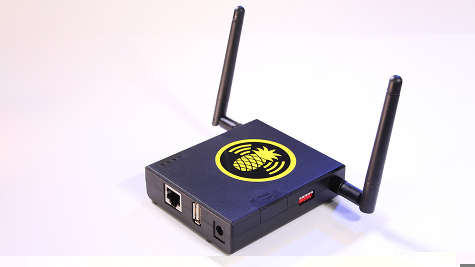

Een virus kan op veel verschillende manieren op je computer komen maar de twee hoofdmanieren zijn: door spam e-mail of door een USB stick te gebruiken. zodra bijvoorbeeld de spam is geopend dan probeert het virus zichzelf op de computer te installeren. dit kan worden voorkomen door antivirus software op je computer te hebben. een USB wordt eigenlijk meer door de hacker zelf gebruikt want s wat dan te worden gedaan is de virus activeren zodra de USB stick in de computer zit en daarna weer de USB meenemen. op deze manier blijft er ook haast geen spoor achter van de hacker. je kan ook nog een virus krijgen doordat de nieuwe WiFi pineapple wordt gebruikt. dit is een nieuwe manier van hacken en zo kunnen ook virussen op je telefoon of computer gezet. dit is een tussen voegsel eigenlijk tussen een echte router van bijvoorbeeld star-bucks en de computer of telefoon. als hier op wordt verbonden krijgt de eigenaar van de WiFi pineapple toegang tot je computer. zodra hij is verbonden met jouw computer dan kan hij makkelijk virussen instaleren op jouw computer. het enige dat je tegen de WiFi pineapple kan doen is niet verbinden met een winkels WiFi.
dit is een WiFi pineapple
de WiFi pineapple is gemaakt doordat mensen naar het populaire spel watchdogs keken. in dit spel speel je als een hacker die voor gerechtigheid zorgt. in dit spel kan je verbinden met netwerken en alles om je heen hacken. door het idea van verbinden met het netwerk is de WiFi pineapple gemaakt.